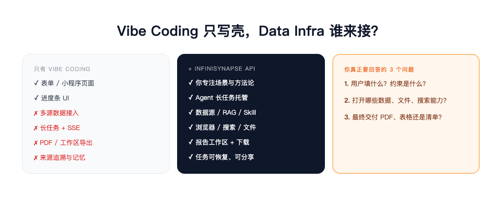
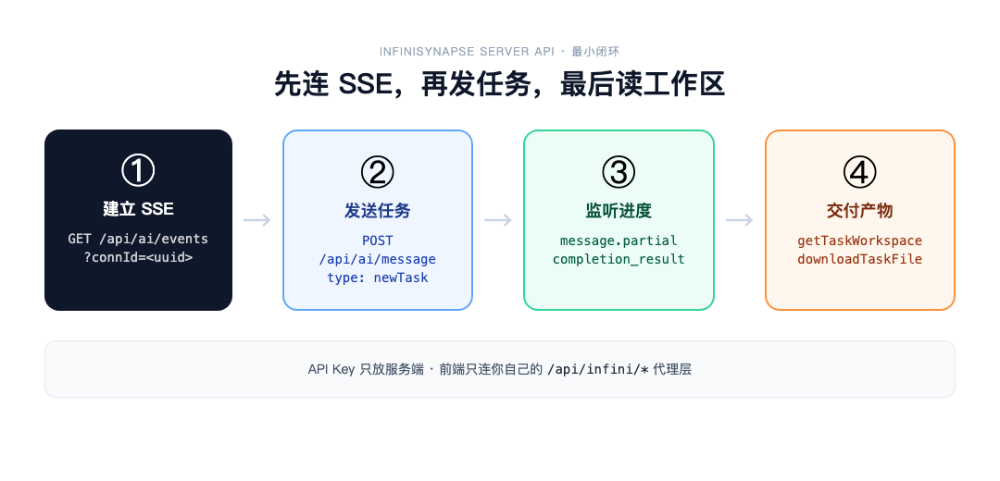

InfiniSynapse 官方 · 2026 年 6 月 · 给 Vibe Coder 的 API 入门
小陈是个产品出身的 Builder 。 Cursor 里一句话，表单页、进度条、结果展示卡片，三小时全出来了。
他要做的是「租房通勤分析助手」：用户填预算、公司地址、可接受通勤时间，系统给出候选片区、地铁线路和租售比对比——不是聊天框里一段文字，是一份能转给室友讨论的 PDF。
凌晨两点，他盯着 localhost:3000 上漂漂亮亮的 UI ，突然意识到：壳有了，后面那条看不见的长链路，一条都没接。
文件怎么解析？公开房源和地铁数据从哪来？ Agent 跑五六分钟，前端怎么知道进度？最后 PDF 存在哪、怎么下载？用户刷新页面，任务会不会丢？
他在 GitHub 上搜了一圈「 agent backend 」，看到的要么是 Demo 级 wrapper ，要么得自己搭一整套任务队列、沙箱、存储。他真正想做的，只是把自己的行业判断变成一个小应用。
如果你也处在这种「页面已 vibe 出来， Data Infra 还没着落」的状态——这篇文章是写给你的。
提到「数据分析」，很多人第一反应是企业：销售看 GMV ，运营看留存，数据团队写 SQL ， BI 做看板。但换个角度看——
填志愿、买东西、选工作、租房子、看体检报告——普通人每天做的关键选择，和企业里的 GMV 分析、留存分析，底层是同一件事：
获取信息 → 结构化 → 计算比较 → 交付可复核的结果。
差别在于：企业的数据在数据库里，个人的数据散落在网页、 PDF 、平台评论、聊天记录和自己的约束条件里。普通人不是缺信息，缺的是一个愿意搜索、计算、验证、并把结果交付出来的分析师。
AI 搜索给摘要，通用聊天给观点。但用户要的不是「几个品牌不错」，而是：
这不是问答，是决策交付。 Vibe Coding 最擅长的是把「决策交付」包装成好用的界面；难的是后面那串企业级 Data Agent 能力——文件、数据源、长任务、工作区、导出、记忆。
⚡ 别重写 Agent 平台
用 Vibe Coding 做场景壳，用 InfiniSynapse 承接 Data Infra。你专心行业方法论，长链路交给 API 。

图 1 ：左边是你一晚上能 vibe 出来的；中间是 InfiniSynapse 已经下沉好的能力
infinisynapse.cn 上几个小应用，表面毫无关系，底层完全一致：
| 应用 | 用户看到的 | 背后同一套能力 |
|---|---|---|
| 高考报考选校 AI 助手 | 省份、分数、冲稳保 PDF | 表单输入 + 数据源 + 长任务 + 报告导出 |
| 省钱比价助手 | Chrome 登录态比价、加购不付款 | 浏览器插件 + Agent + 用户确认边界 |
| 报告快写 | 上传资料、可编辑正文、来源追溯 | 工作区产物 + PDF/Word + Skill 上下文 |
它们回答的三个问题，也是你做第一个 API 应用时要写清楚的：
剩下的——SSE 长连接、沙箱上传、任务恢复、扣费校验、工作区下载——不必每个应用重写一遍。
回到小陈的租房助手。他不需要造 Agent 平台，只需要在后端加一层薄代理，持有 API Key ，转发 InfiniSynapse 请求。

图 2 ：时序别搞反——先 SSE ，再 newTask ，同一个 connId 贯穿全程
INFINI_API_KEY，不要出现在前端或公开仓库国内用 .cn 域名，海外用 .com；完整参考见 InfiniSynapse Server API Reference[2]。
长任务采用 SSE 订阅 + 消息投递 异步模式。顺序很重要：
# 1. 先订阅事件流（客户端生成 connId ）
curl -N "https://app.infinisynapse.cn/api/ai/events?connId=550e8400-e29b-41d4-a716-446655440000" \
-H "Authorization: Bearer <你的 API Key>" \
-H "Accept: text/event-stream"
# 2. 再创建任务（同一个 connId ）
curl -X POST "https://app.infinisynapse.cn/api/ai/message" \
-H "Authorization: Bearer <你的 API Key>" \
-H "Content-Type: application/json" \
-d '{
"type": "newTask",
"connId": "550e8400-e29b-41d4-a716-446655440000",
"text": "用户预算 6000 元/月，公司在国贸，可接受通勤 45 分钟。请结合公开地铁与租售信息，给出 3 个候选片区及风险说明，生成 PDF 报告。",
"chatSettings": { "mode": "act" }
}'
从 SSE 的 message.partial / message.add 读进度；收到 completion_result 后，任务才算跑完。
# 列出任务产物
curl "https://app.infinisynapse.cn/api/ai_task/getTaskWorkspace/<taskId>" \
-H "Authorization: Bearer <你的 API Key>"
# 下载报告文件
curl "https://app.infinisynapse.cn/api/tools/storage/downloadTaskFile/<taskId>?path=report.pdf" \
-H "Authorization: Bearer <你的 API Key>" \
-o report.pdf
你的前端只请求自己的 /api/infini/*；InfiniSynapse 的域名和 Key 永远在后端。
把下面这段丢给 AI ，让它补成你的后端代理——比从零写 Agent 快一个数量级：
const connId = crypto.randomUUID();
// 你的后端：先建立 SSE 转发，再 newTask
const taskRes = await fetch("https://app.infinisynapse.cn/api/ai/message", {
method: "POST",
headers: {
Authorization: `Bearer ${process.env.INFINI_API_KEY}`,
"Content-Type": "application/json",
},
body: JSON.stringify({
type: "newTask",
connId,
text: "根据用户表单生成租房通勤分析报告，输出 PDF",
chatSettings: { mode: "act" },
}),
});
// completion_result 后
const workspace = await fetch(
`https://app.infinisynapse.cn/api/ai_task/getTaskWorkspace/${taskId}`,
{ headers: { Authorization: `Bearer ${process.env.INFINI_API_KEY}` } }
);
💡 第一次试用，先跑通「无私有数据」短报告
等 SSE 、工作区、下载都通了，再接 MySQL 、 RAG 、文件上传和 Chrome 插件。失败路径也要设计：newTask 失败直接报错； SSE 断开用 taskId 拉 getUiMessageById 恢复。
💬 和小陈的对话
无论哪条路，/tasks 控制台都是你的开发者后台： API 发起的任务会出现在左侧 ALL TASKS，方便看消息记录、执行过程和工作区文件。
需要更稳定配额时，可在右上角计算资源菜单创建 Exclusive Compute Resource，从公共 public-engine 切到独占环境。
API 文档第 10 节「典型调用流程」里有一条容易忽略的前置步骤：
在 newTask 之前，如果 Agent 需要数据库或知识库，先完成订阅并启用：
# 列出并启用数据源
curl "https://app.infinisynapse.cn/api/ai_database/list?source=all" \
-H "Authorization: Bearer <你的 API Key>"
curl -X POST "https://app.infinisynapse.cn/api/ai_database/enabled" \
-H "Authorization: Bearer <你的 API Key>" \
-H "Content-Type: application/json" \
-d '{"ids": [1], "enabled": 1}'
报告类应用还可把含 SKILL.md 的方法论作为单次任务上下文上传，或走 /api/ai_skill/upload 安装为用户级 Skill——Agent 会通过 use_skill 加载。
购物/网页研究类应用，先用 GET /api/ai_browser/session 确认 Chrome 插件是否在线。
这些能力单拎出来每一个都是小项目；InfiniSynapse 把它们下沉成 Data Infra，你只在 prompt 和业务流程里声明「用什么、交付什么」。
把 Data Infra 开放给 Vibe Coder ，不意味着 Agent 可以替用户做高风险决定。
现有应用的边界已经写死在产品里：
泛数据分析应用卖的不是「 AI 说了算」，而是少踩坑、少花冤枉钱、把家庭争论变成可讨论的依据。 API 集成时，把「必须用户确认」的步骤写进 autoApprovalSettings 和业务逻辑——这是产品信任的一部分，不是技术细节。
小陈后来没再纠结要不要自建 Agent 平台。他把通勤权重、片区风险 checklist 写进 prompt 和 Skill ，后端 fifty 行代理代码接上 InfiniSynapse——周末 demo 能点，周一就能给真实用户试。
Vibe Coding 把「我有一个想法」变成「我做出了一个界面」； InfiniSynapse API 把界面后面那条企业级分析链路，变成一行 Bearer Token 就能调用的基础设施。
你最近在 vibe 什么场景？ 评论区聊聊——如果我们觉得足够典型，下一篇可以把它写成「从零 API 集成」的完整 walkthrough 。
参考链接
[1] app.infinisynapse.cn/tasks: https://app.infinisynapse.cn/tasks
[2] InfiniSynapse Server API Reference: https://infinisynapse.cn/zh/docs/InfiniSynapse%20Server%20API%20Reference
[3] InfiniSynapse Tools: https://www.infinisynapse.cn/tools
[4] Server API Reference: https://infinisynapse.cn/zh/docs/InfiniSynapse%20Server%20API%20Reference
[5] InfiniSynapse Server API Reference: https://infinisynapse.cn/zh/docs/InfiniSynapse%20Server%20API%20Reference
[6] app.infinisynapse.cn · API Key 管理: https://app.infinisynapse.cn/ai/apikey
[7] InfiniSynapse Tools: https://www.infinisynapse.cn/tools
[8] 高考报考选校 AI 助手: https://www.infinisynapse.cn/apps/gaokao-school-advisor?mode=guest